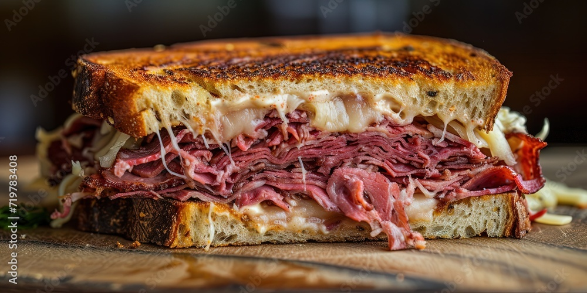

Reuben Sandwhich

A reuben sandwhich is a grilled sandwhich on rye bread with corned beef meat. It contains
swiss cheese and sauerkraut alongside the corned beef usually drenched in Russian or Thousand
Island dressing.
Ingredients
- Rye
- Corned Beef
- sauerkraut
- Swiss Chesse
- Dressing of choice
Steps
- Spread dressing on one side of each piece of bread
- Assemble the sandwhich and butter each side of the sandwhich
- Butter side down place the sandwhich on a hot griddle and flip once toasted.
- Repeat for other side
Home